Problem
Apartment dogs need to socialize
Owning a dog in the city is difficult,
so a communal dog run is a lifesaver for owners with energetic pups.
However, owners must time their visits accurately to enjoy the full benefits of the run.
Owners often end up waiting alone for other dogs to show up or
must hustle away when a dog in heat shows up.
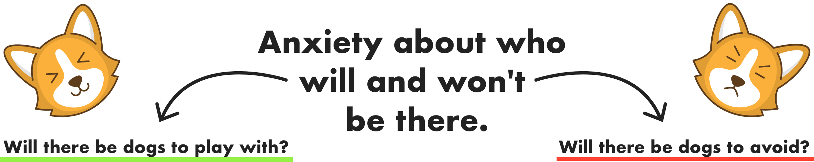

Goal
Help owners effectively schedule play time
This project aims to create a lightweight app that helps owners communicate information about their dog's personality and preferences to the building's dog-owning community as quickly as possible.

See who's at the dog run without going downstairs.
Image credits
How it works
Show users who's at the dog run
This project aims to create a lightweight app that helps owners communicate information about their dog's personality and preferences to the building's dog-owning community as quickly as possible.
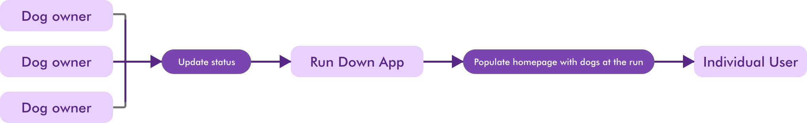
Research
Interviews
I wanted to target dog owners living in high rise buildings with a communal dog run, a common situation in NYC. I interviewed several dog owners in my building to gain a better sense of their different personalities and needs. I found that dogs and owners were mostly different combinations of a few distinct personality groups.
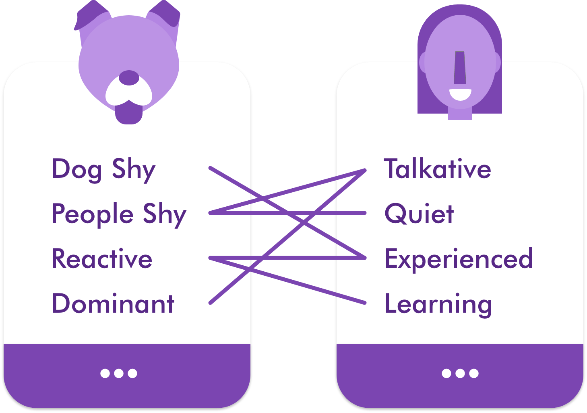
Research
Personas
This project aims to create a lightweight app that helps owners communicate information about their dog's personality and preferences to the building's dog-owning community as quickly as possible.
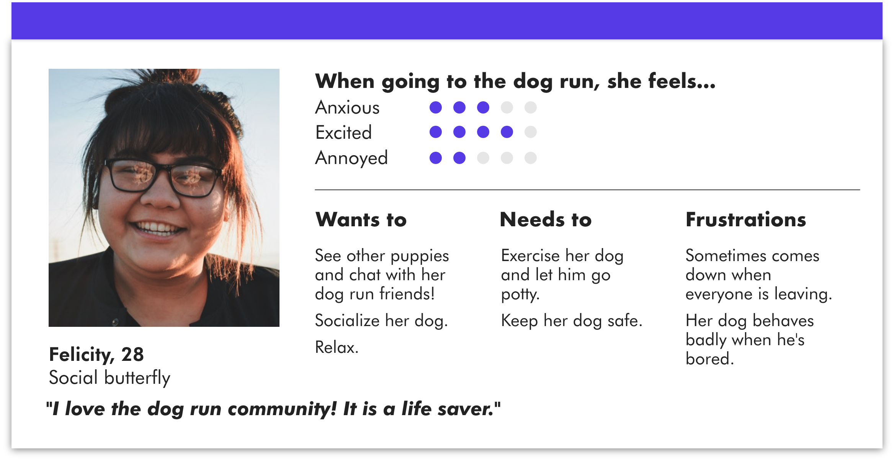
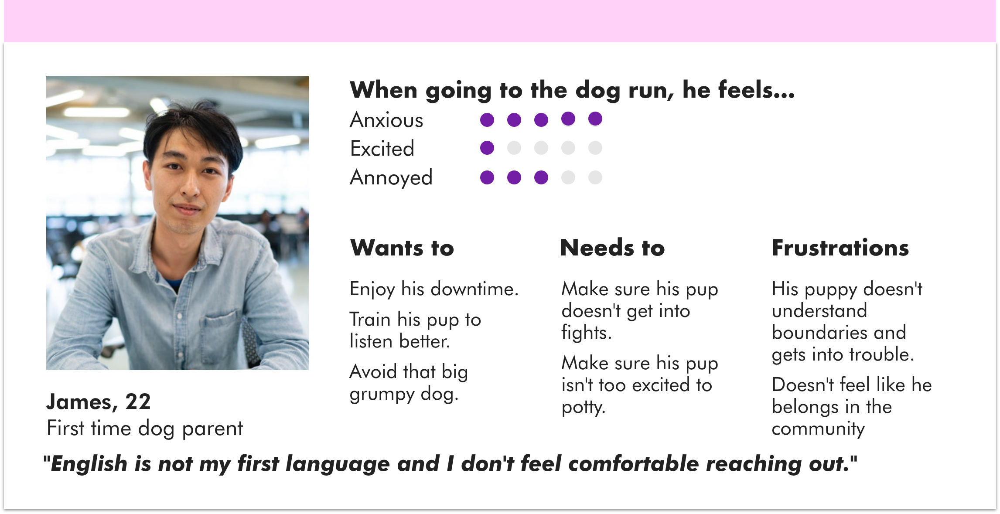
Insights
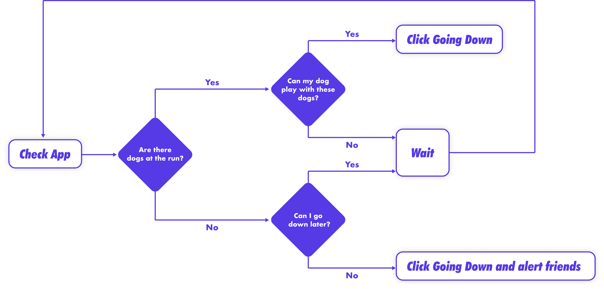
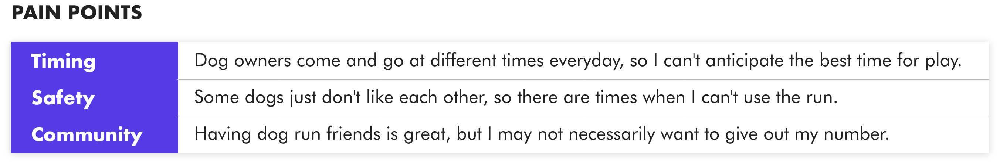
User Flow, before and after
This project aims to create a lightweight app that helps owners communicate information about their dog's personality and preferences to the building's dog-owning community as quickly as possible.
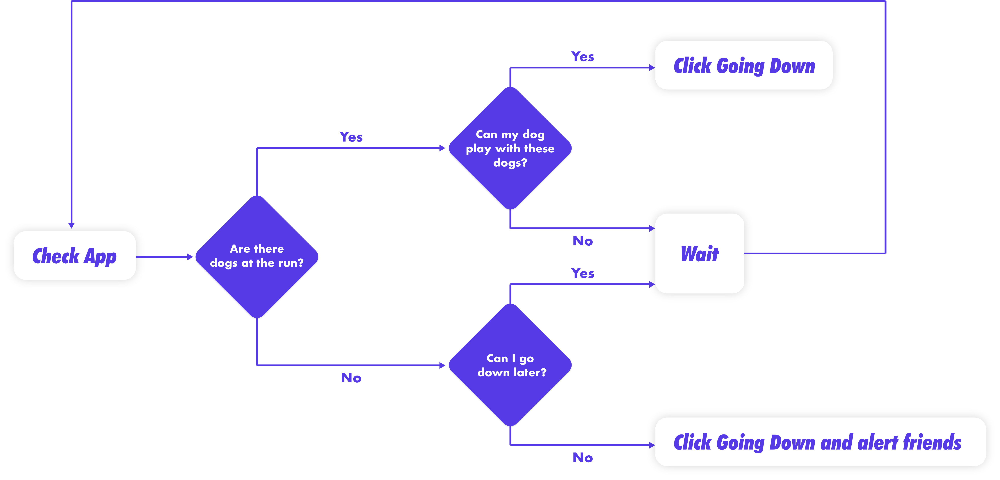
Design Process
Wireframes and testing
-

-

-

-
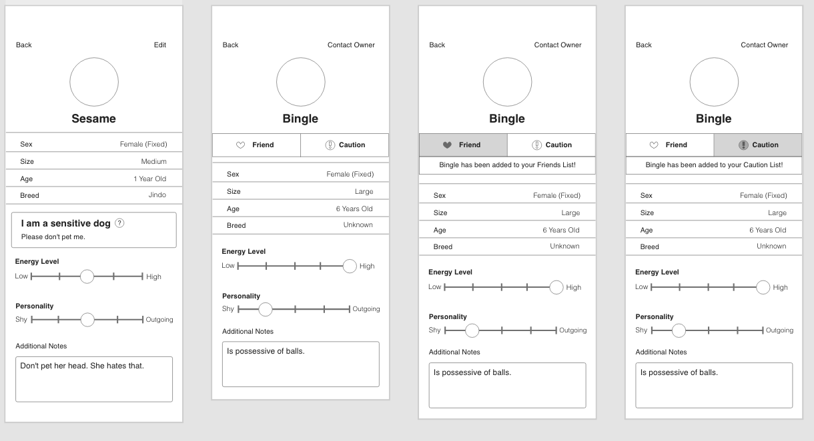
Final Product
Key Functions
Here are some key functions that make this thing sick.
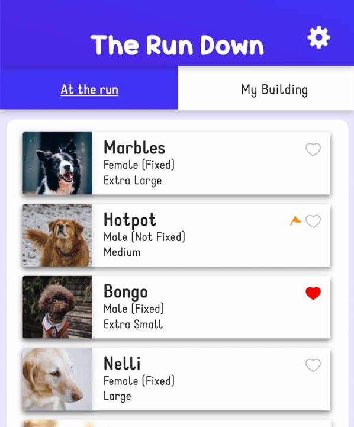
Live Updates
See who's at the run in real time at a glance.
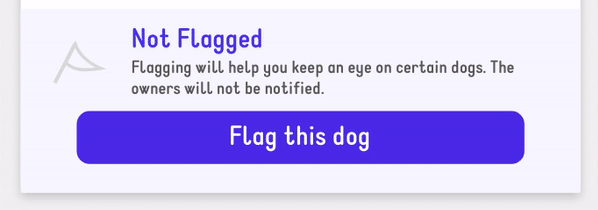
Friend or Flag
Favorite dogs that play well with yours and flag those that don't.
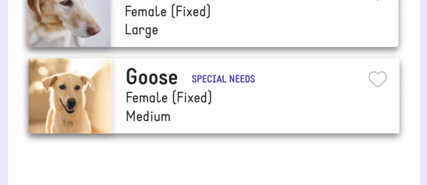
Detailed Profiles
Let others know about your dog's needs and find out about theirs.
Prototype
Test it out